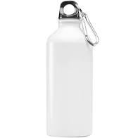

Output on Wolfram Project - cigarette lighter
Output on Mobilenet Model - bottle
Result -
Mobilenet is more acurate.

Output on Wolfram Project - pencil
Output on Mobilenet Model - pen
Result -
Wolfram Project is more acurate.

Output on Wolfram Project - barrette
Output on Mobilenet Model - eraser
Result -
Mobilenet is more acurate.

Output on Wolfram Project - earmuff
Output on Mobilenet Model - headphones
Result -
Mobilenet is more acurate.